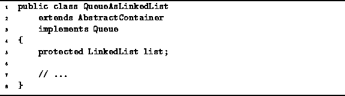

Data Structures and Algorithms
with Object-Oriented Design Patterns in Java
Data Structures and Algorithms
with Object-Oriented Design Patterns in Java
This section presents a queue implementation
which makes use of the singly-linked list data structure, LinkedList,
that is defined in Chapter  .
Program introduces
the QueueAsLinkedList class.
The QueueAsLinkedList extends the AbstractContainer class
and implements the Queue interface.
.
Program introduces
the QueueAsLinkedList class.
The QueueAsLinkedList extends the AbstractContainer class
and implements the Queue interface.

Program: QueueAsLinkedList fields.
 Copyright © 1998 by Bruno R. Preiss, P.Eng. All rights reserved.
Copyright © 1998 by Bruno R. Preiss, P.Eng. All rights reserved.